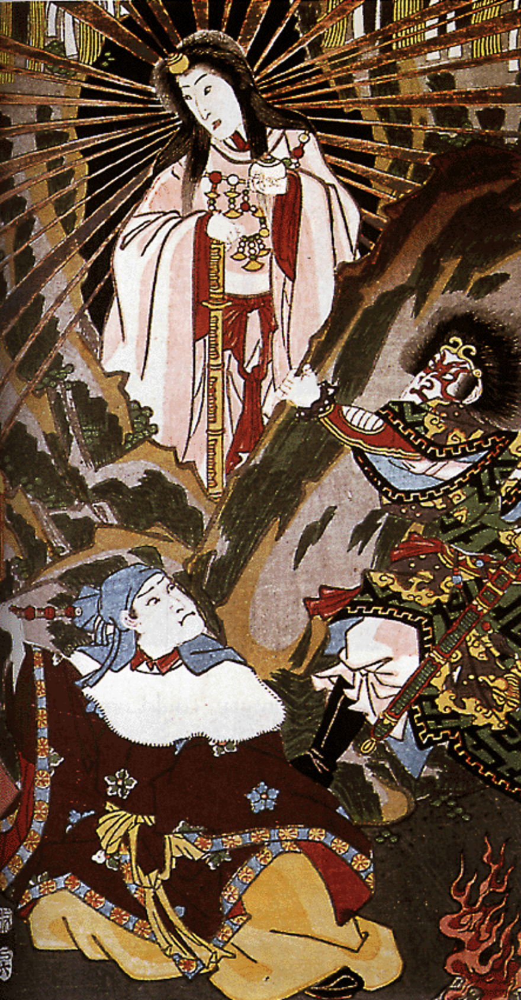

About Amaterasu
Amaterasu, the goddess of the sun, is one of the most revered deities in Japanese mythology. As the embodiment of light and life, she governs the heavens and plays a central role in Shinto beliefs. Amaterasu's influence extends beyond the spiritual realm, with the Japanese Imperial Family claiming descent from her, affirming their divine right to rule. Her story is one of power, purity, and the eternal connection between the heavens and the Earth.
Learn More
Select a topic to explore: